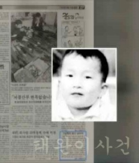

일명 '태완이 사건'으로 불리며, 살인죄 공소시효를 폐지시킨 사건이다.
검은 비닐봉지를 든 정체불명의 남성이 당시 6살이었던 김태완 군의 머리카락을 잡아당긴 후 얼굴에 황산을 부은 뒤 달아났다.
김 군은 얼굴을 비롯한 전신에 3도 화상을 입고 두 눈을 잃었으며, 고통에 시달리다 49일 만에 패혈증으로 사망했다.
유일한 목격자는 어린 청각 장애인으로 귀가 들리지 않는 농아였기 때문에 진술을 하지 못했다.
김 군은 사망하기 직전 범인은 치킨집 아저씨라고 지목했으나, 당사자는 무고를 주장하고 있다.
또 아이의 부모는 캠코더와 녹음 장비를 준비해 김 군이 정신이 들 때마다 증언을 듣기 위해 질문했으나
김 군의 답변을 들은 진술 분석 전문가들의 분석이 엇갈렸고,
경찰은 가해자를 특정할 수 있는 물증과 목격자가 없어 사건 해결이 불가능하다고 결론지은 것으로 전해진다.
